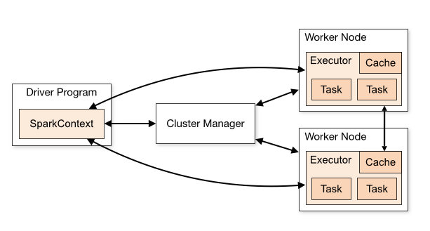

In this Chapter, we will discuss some of the intricacies behind working with Spark and on the DNAnexus platform.
I highly recommend that you go over the Cloud Computing Concepts chapter from Bash for Bioinformatics before you start tackling this in case you need a quick refresher.
3.1 Do I need Spark?
As we’ll discover, Spark is made for working with very large datasets. The datasets themselves might be very long (have billions of rows), or very wide (millions of columns).
Very large data that is used for Phenotyping, such as Electronic Health Record (EHR) or other Real World Data (RWD) can definitely benefit from working with Spark. When this data is ingested into Spark, it is available as an Apollo Dataset and can be used in large scale queries or visualization tools such as Cohort Browser.
Genomic Data is another good use-case. Whole Genome Sequencing outputs usually have hundreds of millions of variants, and with datasets such as UK Biobank, this is multiplied by a very large number of participants. We’ll see in the next chapter that a framework exists for genomic analysis built on Spark called Hail.
Spark/Hail on The Core Platform
Please note that working with Spark requires an Apollo License if you are on the Core Platform. For more information, please contact DNAnexus sales.
If you are on UKB RAP, the Pheno Data is stored as a Spark Database/Dataset, so you do not have to have an Apollo license on RAP. On RAP, you also have access to the Hail configurations of Spark JupyterLab as well.
3.2 Spark Concepts
In this section, we will discuss the basic concepts that you need to know before using Spark successfully on the platform.
On the platform, Spark is used to work with ingested Pheno Data either indirectly using the dx extract_dataset functionality, or by working directly with the Spark Database using Libraries such as PySpark (for Python) or sparklyr (for R), or using Spark SQL to query the contents of a database.
Par-what-now?
You may have heard of Parquet files and wondered how they relate to database objects on the platform. They are a way to store data in a format called columnar storage.
It turns out it is faster for retrieval and searching to store data not by rows, but by columns. This is really helpful because the data is sorted by data type and it’s easier to traverse for this reason.
Apache Spark is the scalable solution to using columnar formats such as Parquet. There are a number of database engines that are fast at searching and traversing these types of files. Some examples are Snowflake and Apache Arrow.
On the DNAnexus platform, certain data objects (called Dataset Objects and Database objects) are actually stored in Parquet format, for rapid searching and querying using Apache Spark.
3.2.1 What is Spark?
Apache Spark is a framework for working with large datasets that won’t fit into memory on a single computer. Instead, we use what’s called a Spark Cluster, which is a cluster of machines that we request when we start Spark JupyterLab. Specifically, we request the Spark Cluster as part of a Spark JupyterLab configuration.

Spark Architecture.
Figure 3.1: ?(caption)
The main pieces of a Spark Cluster are the Driver Node, a Cluster manager (which manages resources on the Worker Nodes), and the Worker Nodes. Individual worker nodes have processes known as Executors that will run on their portion of the data (Figure 3.1).
Spark lets us analyse large datasets by partitioning the data into smaller pieces that are made available to the cluster via the Hadoop File System. Each executor gains access to a set of these data partitions, and they execute tasks assigned to by the Cluster Manager on their set of partitions.
The Driver Node directs the individual executors by assigning tasks. These individual tasks are part of an overall execution plan.
flowchart TD
A[Project Storage] -->|dx download|B[Driver Node]
A -->|dxFUSE|C
B -->|hdfs dfs -put|C[HDFS\nSpark Cluster]
B -->|dx upload|A
C -->|hdfs dfs -get|B
D[DNAX\nS3 Storage] -->|dnax://|C
C -->|dnax://|D
C -->|dxFUSE -limitedWrite|A
Figure 3.2: The four filesystems.
Using Spark on DNAnexus effectively requires us to be familiar with at least 3 different file systems (Figure 3.2):
dxFUSE file system - used to directly access project storage. We access this using file:///mnt/project/ in our scripts. For example, if we need to access a file named chr1.tar.gz, we refer to it as file:///mnt/project/chr1.tar.gz. Mounted at the start of JupyterLab; to access
Hadoop File System (HDFS) - Distributed File System for the Spark Cluster. We access this using the hdfs:// protocol. This is the filesystem that Spark uses by default. When we load Spark DataFrames, this is where the Parquet files belonging to them live.
DNAX S3 Bucket - contains ingested data and other data loaded and saved to a database in Spark. This is a separate S3 bucket. We interact with ingested Pheno and Geno Data using a special protocol called dnax://. Ingested data that is stored here is accessed through connecting to the DNAX database that holds it. Part of why Cohort Browser works with very large data is that the ingested data is stored in this bucket.
Driver Node File System - one waypoint for getting things into and out of the Hadoop File System and to/from Project Storage. Since we run JupyterLab on the Driver Node, we use hdfs dfs -put/hdfs dfs -get to transfer to/from the Driver Node to the Hadoop File system (see below), and use dx download to work with Project Storage files, and dx upload to transfer files back into project storage.
Whenever possible, we want to avoid using the Driver node to transfer files to any of the other filesystems. That is because we are limited to the disk space and memory of the Driver node, and it is easy to run out of memory and disk space when using it to transfer files. To overcome this, there are direct connections between HDFS and the Project Storage using dxFUSE that will let us stream the data.
Overall advice when working in a Spark Cluster:
Try to avoid transfers through the Driver node (hdfs dfs -get/dx upload), as you are limited to the memory/disk space of the Driver node. You can specify a file path directly from project storage by putting a file:///mnt/project/ before the file path (Figure 3.3).
flowchart TD
subgraph F[From Project Storage]
A[Project Storage] -->|dxFUSE|C[HDFS\nSpark Cluster]
end
C --> D[DNAX\nS3 Storage]
Figure 3.3: From Project Storage to HDFS
When possible, use dxFUSE with glob wildcards (such as *.tar.gz or chr*) to directly stream files into HDFS (Spark Cluster Storage) from project storage by using file:///mnt/project/ URLs (Figure 3.4). For example, we could load a set of pVCF files as a Hail MatrixTable with hl.read_vcf("file:///mnt/project/data/pVCF/*.vcf.gz"))
flowchart TD
subgraph F[From Project Storage]
A[Project Storage] -->|dxFUSE|C[HDFS\nSpark Cluster]
end
C --> D[DNAX\nS3 Storage]
Figure 3.4: Load from Project Storage directly into HDFS.
If you need to get files out of HDFS into Project Storage, use dxFUSE in -limitedWrite mode to write into project storage by passing in file:///mnt/project/ URLs to the .write() methods in Spark/Hail. You will need to remount dxFUSE in the JupyterLab container to do this (Figure 3.5).
flowchart TD
subgraph To Project Storage
A[Project Storage]
C[HDFS\nSpark Cluster] -->|dxFUSE -limitedWrite|A
end
Figure 3.5: From HDFS to Project Storage.
If you need to persist your Spark DataFrame, use dnax:///<db_name>/<table_name> with .write() to write it into DNAX storage (for example, mt.write("dnax:///my_db/geno.mt")) (Figure 3.6). When you need to retrieve a stored table in DNAX, use the same dnax:/// URL to load it from DNAX (for example, hl.read_matrix_table("dnax:///my_db/geno.mt").
More advanced usage - you can connect Spark to other S3 buckets using the s3:// protocol. You may need to authenticate before connecting.
Accessing Spark Databases on DNAnexus
One issue I see a lot of people get tripped up with is with Database Access. One thing to know is that Spark databases cannot be moved from project to project. Once the data is ingested into a database object, it can’t be copied to a new project.
For a user to access the data in a Spark Database, they must have at least VIEW level access to the project that contains it on the platform. This includes anyone who is utilizing your database/dataset in Cohort Browser.
Note that Apollo Datasets (not Databases) can be copied to new projects. However, to actually access the data in Cohort Browser, the project that contains the database needs to be viewable by the user.
Spark Cluster JupyterLab vs. Spark Apps
Our main way of using Spark on DNAnexus is using the Spark JupyterLab app. This app will let you specify the instance types used in the Spark Cluster, the number of nodes in your Spark cluster, as well as additional features such as Hail or Variant Effect Predictor. This should be your main way of working with Spark DataFrames that have been ingested into Apollo.
You can also build Spark Applets that request a Spark Cluster. This is a more complicated venture, as it may require installing software on the worker nodes using a bootstrapping script, distributing data using hdfs dfs -put, and submitting Spark Jobs using dx-spark-submit.
3.4 Balancing Cores and Memory
Central to both Spark and Hail is tuning the number of cores and memory in each of our instances. This also needs to be balanced with the partition size for our data. Data can be repartitioned, although this may be an expensive operation.
In general, the number of data partitions should be greater than the number of cores. Why? If there are less partitions than cores, then the remaining cores will be unused.
There are a lot of other tuning considerations to keep in mind.
3.5 The Spark UI
When you start up Spark JupyterLab, you will see that it will open at a particular url which has the format https://JOB-ID.dnanexus.com. To open the Spark UI, use that same URL, but with a :8081 at the end of it. For example, the UI url would be https://JOB-ID.dnanexus.com:8081.
Note that the Spark UI is not launched until you connect to Spark or Hail.
The Spark UI is really helpful in understanding how Spark translates a series of operations into a Plan, and how it executes that plan.
3.6 Spark and Lazy Evaluation
One thing that is extremely important to know is that Spark executes operations in a Lazy manner. This is opposed to a language like R or Python which executes commands right away (a greedy manner).
There are a number of commands that make Spark immediately start calculating a result, including:
.count()
.show()
.write()
.collect()
When we run Spark operations, we are usually building chains of operations. For example, we might want to .filter() on a column, .select() columns of data, or aggregate (summarize) columns.
Spark builds up these chains of commands until it sees it needs to execute an operation. For example:
df.filter().select().show(5)
3.7 Extracting PhenoData with dx extract_dataset
First of all, you may not need to use Spark JupyterLab if you just want to extract Pheno Data from a Dataset and you know the fields.
There is a utility within dx-toolkit (the CLI tools for working with the DNAnexus platform) called dx extract_dataset that will retrieve pheno data in the form of a CSV. It uses Spark, but the Spark is executed by the Thrift Server (the same Spark Cluster that also serves the data for Cohort Browser).
You will need a list of entity/field ids to retrieve them. For more info, please refer to the R Notebook (Chapter 4) and the Python Notebook.
However, there are good reasons to work with the Spark Database directly. Number one is that your Cohort query will not run on the Thrift Server. If your query is complex and takes two minutes to execute, the Thrift Server will timeout. In that case, you need to run your own Spark JupyterLab cluster and extract the data using Spark itself.
3.8 Connecting with PySpark (For Python Users)
The first thing we’ll do to connect to the Spark database is connect to it by starting a Spark Session. Make sure you only do this once. If you try to connect twice, Spark will throw an error.
If this happens, make sure to restart your notebook kernel.
The basic template for running Spark Queries is this:
```{python}retrieve_sql ='select .... from .... 'df = spark.sql(retrieve_sql)```
3.8.2 Koalas is the Pandas version of Spark
If you are familiar with Pandas, the Koalas module (from Databricks) provides a Pandas-like interface to SparkSQL queries. This way, you don’t have to execute native Spark commands or SparkSQL queries.
Once you have a Spark DataFrame, you can convert it to a Koalas one by using the .to_koalas() method.
```{python}df_koalas = df.to_koalas()```
3.9 Connecting with sparklyr (For R Users)
You’ll need to install the package sparklyr along with its dependencies to work with the Spark DataFrames directly with R.